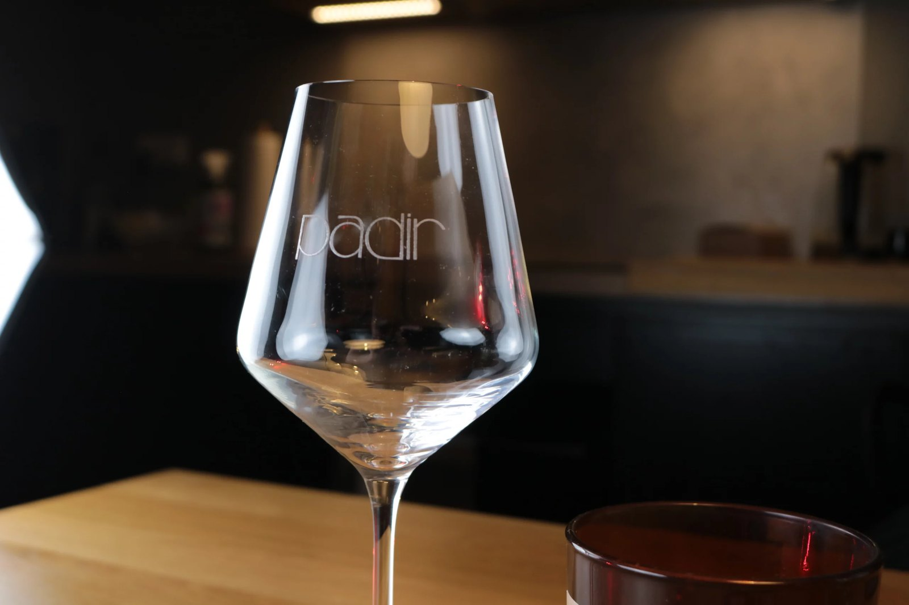
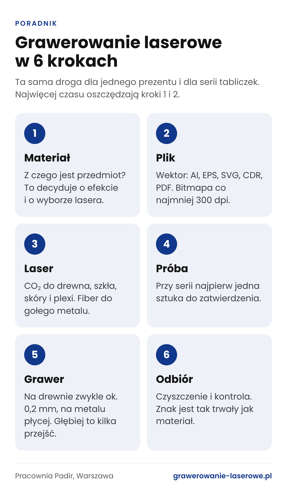
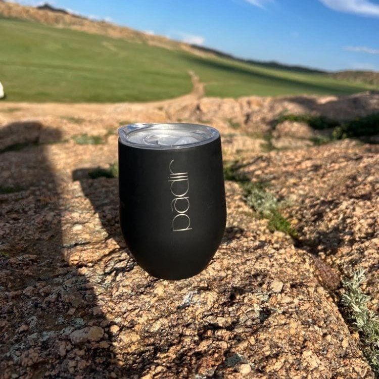
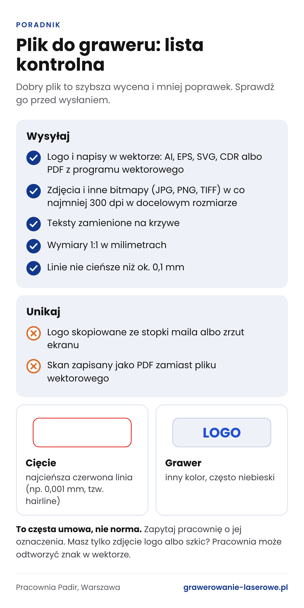
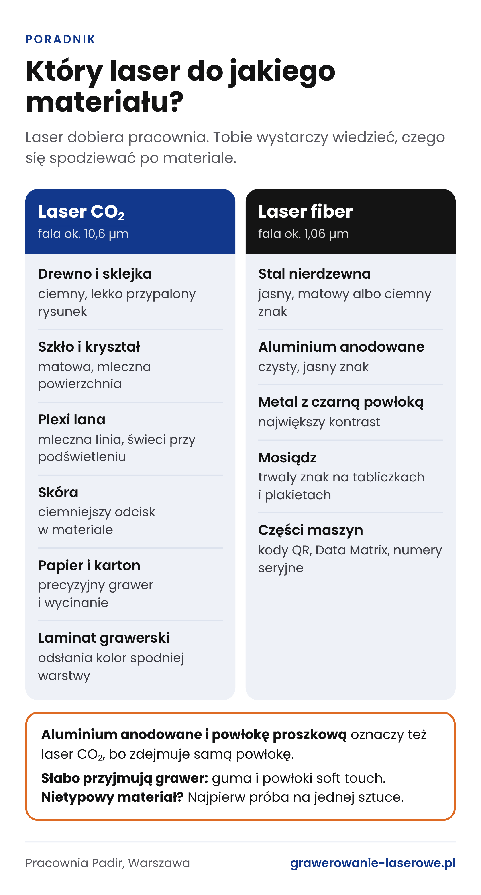

Grawerowanie laserowe krok po kroku: od pomysłu do gotowego przedmiotu
Logo na kieliszku, imię na nożu, numer seryjny na tabliczce. Wszystko to powstaje w podobny sposób, a o tym, czy znak wyjdzie wyraźny, decyduje głównie to, co dzieje się przed uruchomieniem lasera. Przechodzimy przez całą drogę zlecenia, od wyboru materiału po odbiór, i pokazujemy błędy, które najczęściej ją wydłużają.


Najpierw materiał, potem projekt
Laser nie nakłada farby. Usuwa, nadtapia albo przebarwia cienką warstwę powierzchni, więc to od materiału zależy, jak będzie wyglądał gotowy znak. Ten sam napis wychodzi na różnych przedmiotach zupełnie inaczej:
- drewno ciemnieje i daje brązowy, lekko przypalony rysunek,
- szkło matowieje, bo wiązka tworzy na powierzchni mikropęknięcia,
- przezroczysta plexi, zwłaszcza lana, dostaje mleczną linię, która świeci, gdy taflę podświetli się od krawędzi,
- skóra przyjmuje ciemniejszy odcisk, wpisany w materiał,
- stal nierdzewna i aluminium dają zwykle jasny, matowy ślad, a stal można też przyciemnić,
- na kubkach i butelkach z czarną powłoką proszkową laser odsłania jasny metal i kontrast jest największy.

Niektóre materiały słabo przyjmują grawer. Na gumie i powłokach typu soft touch znak zwykle wychodzi nierówny, więc zanim zamówisz setkę gadżetów z takim wykończeniem, rozważ inny model. Przy nietypowym tworzywie, kamieniu albo przedmiocie z nieznanego stopu dobra pracownia sama zaproponuje najpierw próbę.
Plik decyduje o połowie efektu
Częsty powód opóźnień to nie maszyna, tylko plik. Laser grawerujący pracuje na dwa sposoby. Może prowadzić wiązkę po liniach: tak powstają kontury i cięcie. Może też przesuwać się w poziomych pasach, jak głowica drukarki, i wypełniać powierzchnię punkt po punkcie. W obu przypadkach liczy się jakość grafiki.
Logo, napisy i proste znaki najlepiej przysłać w wektorze: AI (z Illustratora), EPS, SVG, CDR (z CorelDRAW) albo PDF wyeksportowany z programu do grafiki wektorowej. Zeskanowana kartka zapisana jako PDF to nadal zwykły obrazek. Wektor to rysunek zapisany jako krzywe, a nie piksele. Można go powiększyć do rozmiaru tabliczki na drzwi albo zmniejszyć do monogramu na długopisie, a krawędzie zostaną ostre.
Zdjęcia i grafiki z płynnymi przejściami tonów to bitmapy, czyli pliki JPG, PNG albo TIFF. Też nadają się do graweru, ale potrzebują rozdzielczości co najmniej 300 dpi w docelowym rozmiarze. Logo skopiowane ze stopki maila albo zrzut ekranu ze strony internetowej prawie zawsze mają jej za mało i na metalu wyjdą poszarpane.
Kilka rzeczy, które oszczędzą ci wymiany maili:
- zamień teksty na krzywe, bo pracownia może nie mieć twojej czcionki i program podstawi inną,
- ustaw wymiary 1:1 w milimetrach, tak jak grawer ma wyglądać na przedmiocie,
- nie rysuj linii cieńszych niż około 0,1 mm, bo na drewnie i skórze zaczną się zlewać,
- jeśli w jednym pliku jest cięcie i grawer, rozdziel je kolorami.
W wielu pracowniach obowiązuje prosta umowa co do kolorów: najcieńsza czerwona linia (np. 0,001 mm, tzw. hairline) oznacza cięcie, a grawer zaznacza się innym kolorem, często niebieskim. Przed wysłaniem pliku zapytaj jednak wykonawcę, jak oznacza jedno i drugie. Przegląd programów graficznych i formatów zapisu znajdziesz w poradniku o tym, jak przygotować plik do graweru.
A jeśli masz tylko zdjęcie logo z ulotki albo szkic na kartce? Pracownie zwykle odtwarzają taki znak w wektorze. Proste logo często przerysowują bez dopłaty, a rozbudowaną grafikę liczą jako osobną pracę.

Laser CO2 czy fiber?
W pracowniach grawerskich najczęściej stoją dwa rodzaje laserów. Laser CO2 wytwarza światło o długości fali około 10,6 µm. Dobrze pochłaniają je materiały organiczne i większość niemetali: drewno, sklejka, skóra, papier, plexi, szkło, laminaty grawerskie. Laser światłowodowy, czyli fiber, pracuje na fali około 1,06 µm i to on znakuje metale: stal nierdzewną, aluminium, mosiądz. W przemyśle nanosi też kody QR i numery seryjne na części maszyn.
Do okrągłych przedmiotów, takich jak kieliszki, butelki czy kubki, przydaje się przystawka obrotowa. Obraca naczynie pod wiązką, więc grawer może objąć cały obwód, a nie tylko wąski pas z przodu.
Laser dobiera pracownia. Ty piszesz tylko, z czego jest przedmiot i jaki efekt cię interesuje. Dobrze jednak wiedzieć jedno: laser CO2 bez specjalnych preparatów nie oznaczy gołej stali ani mosiądzu. Poradzi sobie za to z aluminium anodowanym i z kubkami pokrytymi farbą proszkową, bo zdejmuje tylko powłokę. Jeśli zamawiasz grawer na gołym metalu, zapytaj, czy w pracowni jest laser fiber.

Próba na jednej sztuce
Przy pojedynczym prezencie próba zwykle nie jest potrzebna. Przy serii to dobry zwyczaj. Jedne tworzywa pod laserem jaśnieją, inne ciemnieją, a cienkie szkło potrafi pęknąć nawet przy ostrożnych ustawieniach. Lepiej stracić jeden kieliszek niż pięćdziesiąt.
Próbka służy też do zatwierdzenia pozycji i wielkości znaku. Do dłuższych serii pracownia przygotowuje podstawkę albo szablon, w który wkłada się kolejne sztuki. Dzięki temu logo na setnym kubku jest dokładnie tam, gdzie na pierwszym.
Sam grawer
Laser pracuje bezdotykowo. Nie dociska przedmiotu i nie zostawia śladów narzędzia, dlatego poradzi sobie z cienką blaszką albo delikatną biżuterią. Czas pracy zależy głównie od powierzchni i głębokości. Na drewnie, skórze czy plexi typowy grawer sięga około 0,2 mm w głąb materiału. Na metalu i szkle znak jest zwykle dużo płytszy, często to setne części milimetra. Gdy potrzebny jest głębszy rowek, laser przechodzi przez to samo miejsce kilka razy, a w metalu nawet kilkadziesiąt, więc praca trwa dłużej i kosztuje więcej. Bardzo głębokie, rzeźbiarskie wzory robi się już zwykle frezarką CNC.
Krótki napis na długopisie to chwila. Grawer na całej powierzchni dużej tabliczki trwa wielokrotnie dłużej, nawet jeśli w pliku wygląda niepozornie.
Wykończenie i trwałość
Po grawerze przedmiot trzeba oczyścić: z drewna i skóry usuwa się nalot z dymu, ze szkła drobny pył. Sam znak jest tak trwały jak materiał, w którym powstał. Na stali zostaje na bardzo długo. Na drewnie wiele zależy od tego, czy przedmiot ma kontakt z wodą, jak deska do krojenia. Grawerowane szkło dobrze znosi zmywarkę, bo w przeciwieństwie do nadruku nie ma tu żadnej warstwy, która mogłaby się zetrzeć.
Ile to trwa i ile kosztuje
Na cenę wpływa liczba sztuk, powierzchnia graweru, materiał (i to, czy dostarczasz go sam), przygotowanie pliku oraz termin. Pracownie często mają minimalną kwotę zlecenia, bo ustawienie maszyny zajmuje czas bez względu na to, czy powstaje jedna sztuka, czy dziesięć. Termin zależy głównie od kolejki i wielkości serii, więc przy większym zamówieniu zapytaj o niego już przy wycenie.
Przykład z Warszawy: pracownia Padir z Targówka działa od 2002 roku i przyjmuje zlecenia od jednej sztuki. Najniższa kwota zamówienia to 100 zł. Mniejsze zlecenia są gotowe w ciągu dwóch dni roboczych, a za dopłatą nawet od ręki. Na miejscu pracuje pięć laserów CO2 marki Trotec, a metal znakuje laser fiber. Na osobnej stronie pracownia pokazuje, jak wygląda u niej grawerowanie laserowe, i podaje listę materiałów oraz zastosowań.
Lista kontrolna przed zamówieniem
- Z czego jest przedmiot i czy masz go u siebie, czy pracownia ma go kupić.
- Plik w wektorze albo grafika w co najmniej 300 dpi, teksty zamienione na krzywe.
- Wymiary graweru w milimetrach i miejsce na przedmiocie. Najprościej wysłać zdjęcie z zaznaczeniem.
- Liczba sztuk i informacja, czy treść się zmienia, np. inne imię na każdym kieliszku.
- Termin z zapasem, zwłaszcza w listopadzie i grudniu, gdy kolejki są dłuższe.
- Przy serii zgoda na próbkę przed produkcją.
Jeśli mail do pracowni odpowiada na wszystkie te punkty, wycena przychodzi szybko i nikt nie musi dopytywać o szczegóły.